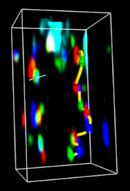
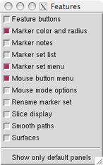
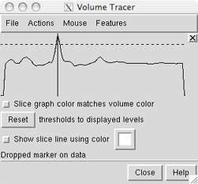

), if present.
), if present.
 Volume Tracer allows interactive placement of markers within volume data displayed by Volume Viewer. The markers can be labeled and connected by smooth, interpolated paths, and paths can be stacked to form a surface. Markers can also be placed, moved, and connected in arbitrary ways to build conceptual models independent of any volume data. The state of Volume Tracer is included in saved sessions. See also: Volume Series, shape tube, mask, meshmol
This tool was initially designed to trace fluorescently labeled chromosomes in light microscope data and protein backbones in cryoelectron microscope density maps.
There are several ways to start Volume Tracer, a tool in the Volume Data category (including from the Volume Viewer Tools menu).
Volume Tracer includes many options, usually not all shown at once.
Clicking a checkbox in the Features menu
expands the dialog to show the corresponding section.
A section can be closed by unchecking its entry in the Features menu,
unchecking its feature button, or
clicking its close button (), if present.
| Features menu (default settings) |
|---|
|  |
This section contains a row of small, unlabeled buttons representing the other possible sections of the Volume Tracer dialog. Checking a feature button has the same effect as checking a box in the Features menu. Although arranged horizontally, the buttons are in the same order as the menu entries. Placing the cursor over a feature button shows the name of the feature.
A marker set is a named collection of markers and links, implemented in Chimera as a molecule model.
Multiple marker sets can be present, but only one at a time can be the active set. The Marker set menu shows the name of the active set. Various menu operations apply to the active set, and newly created markers and links are added to this set.
At first, the active (and only) marker set is marker set 1. File... New marker set starts a new marker set and makes it the active set. Marker sets are initially named marker set 1, marker set 2, etc., but can be renamed. Markers can be transferred from one set to another. File... Close marker set removes the active set. A marker set cannot be recovered after it has been removed.
← Marker set menuThe name of the active set is shown next to the words Marker set. Clicking on the name reveals a menu of all open marker sets, from which a different set can be designated as the active set.
← Marker set listThis section is a list of all open Marker Sets. A set can be designated as the active set by clicking its entry in the list. Although only one set at a time can be the active set, multiple sets can be chosen from the list by dragging with the mouse or Ctrl-clicking on individual entries. The chosen sets can then be saved to a single marker file with File... Save selected marker sets as... or deleted with File... Close marker set.
← Rename marker setIn this section, the active set can be renamed by entering a new name and pressing the return key (Enter).
A marker is a sphere with an associated position, radius, and color, implemented in Chimera as an atom. Each marker belongs to a marker set (molecule model). As markers are created, they are assigned successive residue numbers for convenient command-line specification (for example, #0:10-18 specifies markers 10-18 in model 0). Just like other atoms in Chimera, markers can be selected and their attributes can be inspected and modified.
Markers that are selected can be hidden, shown, deleted, or transferred to the active set using the Volume Tracer Actions menu. When no markers are selected, the hide and show (but not delete) Actions apply to all markers in the active set. A marker cannot be recovered after it has been deleted.
Markers that are selected can also be used to define a zone of volume data display (with Zone in Volume Viewer), other surface display (with Surface Zone), or surface coloring (with Color Zone).
A newly created marker is always added to the active set. When a marker is created, it is selected and any other markers are deselected. The Mouse mode options and Mouse menu control how markers are created, while the Mouse button menu controls which mouse button is used.
← Mouse button menuUse [button] to place/move markers controls which mouse button will be used for marker operations. This assigned button will cease to perform any previously assigned function while assigned to one or more marker operations in the Mouse mode options or Mouse menu.
← Mouse mode optionsThis section controls how markers and links are created. The checkbox options are also available in the Mouse menu.
If any marker creation mode is also active, the result of clicking the assigned button depends on the location of the click. Clicking over an existing marker grabs it for movement/resizing, while clicking elsewhere creates a new marker.
Only one marker can be moved or resized at a time. A marker cannot be grabbed if there is another selectable item (such as an atom, bond, or another marker) in front of it. Volume displays created by Volume Viewer are not selectable, so they will not interfere with marker grabbing.
A newly created marker can also be moved in what was the Z-dimension at the time of its creation by dragging the vertical line in the slice graph.
| Slice display |
|---|
|  |
In the slice graph, a data set in Volume Viewer) is shown with a solid line and a dotted line. Slice graph color matches volume color indicates that the lines should be shown in the same color as the volume display. The solid line represents data values; the dotted line is the detection threshold for placing markers. When a marker is placed on a data spot, its Z-position is indicated with a vertical black line, The vertical line can be dragged to move the marker to a different depth. This is useful when a marker has been placed on a faint foreground spot rather than its intended destination, a brighter background spot.
The detection threshold is initially the same as the lowest display threshold set in Volume Viewer. As needed, the detection threshold can be dragged higher or lower in the slice graph with the mouse. This does not change the display threshold. Once a detection threshold has been moved, it is shown with longer dashes. Reset sets the detection threshold(s) back to the existing display threshold(s).
When Show slice line using color is on, creating a marker within the volume data box generates a line along the current Z axis that intersects the marker. The color of the line is specified in the adjacent color well. Changing the color will not affect an existing slice line, only those subsequently drawn. If there is no volume data, no slice line will be generated. Because the line follows the line of sight at the time of marker creation, it will not be visible until there has been some rotation. Upon rotation, it should be evident which data spots the line intercepts and whether the marker has been placed on the intended spot. The slice line will disappear when a newer marker is created, and if the newer marker is within the volume data box, a slice line will be drawn for the newer marker. Slice lines are implemented as VRML models.
← Marker notesA marker note is a text annotation associated with a marker, implemented as an atom label in Chimera. Notes on markers that are selected can be hidden, shown, or deleted using the Volume Tracer Actions menu. When no markers are selected, the hide and show (but not delete) Actions apply to all marker notes in the active set. A marker note cannot be recovered after it has been deleted.
Entering text in the Marker note field and pressing the return key labels each selected marker with that text. Notes cannot occupy multiple lines. The adjacent color well specifies the color of the text. Editing the color changes the note color of any selected markers.
The font size of notes (along with all atom labels) can be adjusted in the Background preferences. Marker notes cannot be repositioned relative to their markers. For publication/presentation purposes, the 2D Labels tool is a good alternative: it allows text strings of multiple sizes and colors to be placed arbitrarily in the (X,Y) plane of the screen. These 2D labels are not associated with any atoms or markers, and will not move when models are rotated and translated.
A link is a connection between markers, implemented in Chimera as a bond and displayed as a cylinder with user-specified radius and color. Only one link can exist for a given pair of markers. Just like other bonds in Chimera, links can be selected and their attributes can be inspected and modified.
Links that are selected can be hidden, shown, or deleted using the Volume Tracer Actions menu. When no links are selected, the hide and show (but not delete) Actions apply to all links in the active set. A link will also be hidden when the markers it connects are hidden. A link cannot be recovered after it has been deleted.
If the command bondzone has been issued, links that are selected can also be used to define a zone of volume data display (with Zone in Volume Viewer), other surface display (with Surface Zone), or surface coloring (with Color Zone).
A newly created link is always added to the active set. When a link is created, it is selected and any other links are deselected. The Mouse mode options and Mouse menu control how links are created.
This section specifies the colors and radii of markers and links.
Editing the Marker color (using the associated color well) changes the color of any selected markers. New markers will also receive the specified Marker color unless Marker color matches volume color is turned on. In that case, new markers placed on data spots will be colored to match the spots, but other new markers will receive the specified Marker color.
Conversely, Color Zone can be used to color volume data surfaces to match nearby selected markers.
When marker radius is not specified, a default value is determined as follows:
The number of subdivisions used for drawing the markers (and thus the smoothness of the spheres) can be increased by raising subdivision quality in the Effects tool. Higher values increase smoothness, but may slow performance.
Editing the Link color (using the associated color well) changes the color of any currently selected links and subsequently created links.
Links can be shown as lines (radius = 0) or as cylinders (radius > 0). When link radius is not specified, it is set to half of the default marker radius. Entering a link radius value (with or without pressing the return key) sets the radii of subsequently created links. When the return key is pressed, the radii of any selected links will be changed accordingly.
← Smooth pathsWith this section of the dialog, interpolated paths can be generated for linked chains of markers. Clicking Show generates a curve for each chain of markers in the active set; if multiple links emanate from a marker, so will multiple curve segments. (Links can be hidden with Actions... Hide links.) Each curve is an Overhauser (also called Catmul-Rom) spline, a cubic spline where the tangent at each marker is parallel to the vector between the preceding and following markers. Curves for a marker set are implemented as pieces of a surface model. Unshow removes any curves drawn for the active set.
After a parameter is changed, it is necessary to click Show or press return within any Smooth paths parameter field to apply the change. Paths can be shown as lines (Curve radius = 0) or as tubes constructed from multiple cylinders (Curve radius > 0). The number of line segments or cylinders forming the curve between a linked pair of markers equals Segment subdivisions + 1.
A path is colored based on marker and link colors. Band length specifies the length of curve centered on each marker that should be colored the same as the marker. Parts of the curve further away from a marker receive the color of the corresponding link. Generally, color bands are not exactly the specified length because:
A series of connected paths (either closed loops or open curves) can be combined to form a surface. Typically, a path is generated for each of several volume data planes using the settings Place markers on data planes and Place markers while dragging. The stack of paths can then be joined in the orthogonal direction to create a surface. Surfaces created by Volume Tracer are saved in sessions and can be used to segment volume data with the command mask.
Clicking Create uses all selected markers, or if none are selected, all markers in the active set, to generate a surface. The markers must be linked into paths, and the paths used to make a given surface must be either all closed loops or all open-ended. Branched paths are not allowed, and the surface cannot form forked tubes. Cap surface end loops makes the surface cover the ends of tubes formed by closed-loop paths.
Each surface created by Volume Tracer is a single surface piece in the surface model named Traced surfaces. There is only one Traced surfaces model, but it can contain multiple surface pieces created from different collections of markers. Clicking Create repeatedly for the same markers will generate multiple identical surface pieces. Delete closes (removes) any surface pieces of the Traced surfaces model that are selected. It is necessary to delete and recreate a surface to update it after moving a marker.
A
Marker files can be read and written using the Volume Tracer File menu. In addition, they can be opened with Chimera's general file-reading mechanisms, just like other registered file types. The Chimera marker file type can be indicated with the suffix .cmm (part of the filename) or the prefix markers: (not part of the filename).
The format is actually XML, a text file that can be viewed and edited with an editor and can be read or created by other programs. Libraries for parsing XML are available in many programming languages. The following marker file describes two markers connected by a link:
<marker_set name="marker set 1">
<marker id="1" x="-6.1267" y="17.44" z="-3.1338" radius="0.35217"/>
<marker id="2" x="1.5395" y="16.277" z="-3.0339" r="0" g="1" b="1"
radius="0.5" note="An example note"/>
<link id1="2" id2="1" r="1" g="1" b="0" radius="0.17609"/>
</marker_set>
The r, g, and b attributes are red, green, and blue color components, respectively, with possible values ranging from 0 to 1.
Extra attributes can be present within the marker, link, and marker_set tags. While these are not used by Volume Tracer, they provide a mechanism for retaining information from or passing information to other programs. For example,
<marker id="3" x="3.23" y="4.34" z="5.45" r="0" g="0" b="1" radius=".4" note="105" somethingextra="hoola hoop"/> <link id1="1" id2="2" r="0" g="1" b="0" radius=".2" leprechaun="gold"/>shows the extra attributes somethingextra and leprechaun. Extra attributes included in an input file are retained and included in files written back out.
Features: possible sections (features) of the Volume Tracer dialog
May place markers on data hidden with Surface Zone. Markers may be placed in regions of volume data that have been hidden with Surface Zone. Markers land at the same locations they would if no surface zone were in effect, possibly in volume regions outside of the displayed zone.
Transparency not saved.
Although markers and links can be transparent (when transparent
marker and link colors are used),
transparency is not saved in marker files.
POSSIBLE DEVELOPMENTS